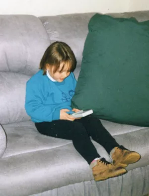
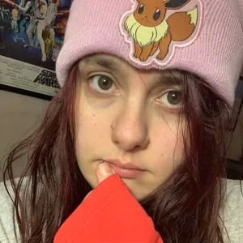
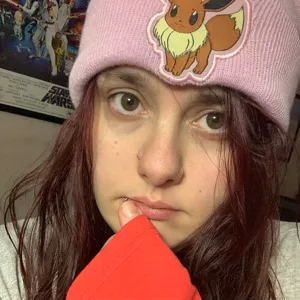
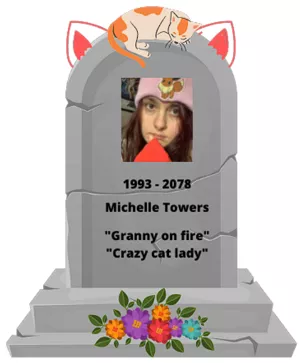
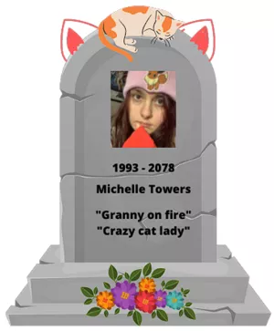

Michelle Towers
History
Early Life
Michelle was born at 9:13 am on 16th October 1993. She was an
only child until the age of two when her mother decided that
introducing a new child to their family was the best option,
and so her brother Chris was born. Shortly after Chris'
birth, their dad left, and Michelle's mum was left to
raise two kids on her own. Not much of Michelle's
childhood can be recalled; she didn't see her dad again
until she was eight, and he had a new girlfriend.
Around this time, Michelle was first introduced to computer games. She fell in love with Age of Empires and Train Simulator. Her grandfather gifted a computer to Chris and her for Christmas one year. He taught Michelle all about what each component does and how they all interact with one another. Michelle got curious one day and pulled out the IDE cable, wanting to know why it was so wide and flat and what it did - breaking her computer's hard drive in the process. With help from her grandfather, they fixed it together. Michelle's father and his GF eventually get married, and they also have two kids. Emma and Violet. Violet was born when Michelle was 18, and Emma was born when Michelle was 20.
Michelle enjoyed school until she entered high school, as it was here that she started to struggle with mental health issues and stopped applying herself well. She would later regret this, but at the time thought that she knew what was best. She instead focused more on playing games, mostly Call of Duty, and stopped doing most activities that she had previously enjoyed, like drawing and reading.
When she was around 20, under a lot of peer pressure: Michelle applied for a volunteer job at her local community centre. It was here that she would transfer data from paper to digital, something that she was surprised she enjoyed doing. She liked how immersive and alone she felt when focusing on such a mundane task. However, she did not stay long here as her mental health issues got in the way, and she eventually stopped going to work. Michelle instead chose to spend her time playing games. Her favourite being Destiny 1 and Destiny 2. It would not be for another 7 years that Michelle actually did something meaningful with her life. Meaningful in terms of social standards. However, if you ask her, she had more fun in the last couple of years than ever; but there was always something missing. A desire to have something to do, a schedule to follow, to be learning something.. To be contributing.
And so, 2022 arrives, and Michelle decides that with or without mental health problems, she will apply herself in a field that she really enjoys. This turned out to be one of the best decisions of her life so far. She has thrived in this environment, feeling happier to be doing something and interacting with the people she has met. Michelle specifically enjoyed Helia and Blayne's company the most as they were all so alike in terms of humour and work efficiency. Michelle's first year back of education thus far was a great success. She was proud of herself for finally taking the step to do something that she once felt would be impossible to do. Michelle was excited for her future, a feeling she hadn’t felt in a long time.
Around this time, Michelle was first introduced to computer games. She fell in love with Age of Empires and Train Simulator. Her grandfather gifted a computer to Chris and her for Christmas one year. He taught Michelle all about what each component does and how they all interact with one another. Michelle got curious one day and pulled out the IDE cable, wanting to know why it was so wide and flat and what it did - breaking her computer's hard drive in the process. With help from her grandfather, they fixed it together. Michelle's father and his GF eventually get married, and they also have two kids. Emma and Violet. Violet was born when Michelle was 18, and Emma was born when Michelle was 20.
Michelle enjoyed school until she entered high school, as it was here that she started to struggle with mental health issues and stopped applying herself well. She would later regret this, but at the time thought that she knew what was best. She instead focused more on playing games, mostly Call of Duty, and stopped doing most activities that she had previously enjoyed, like drawing and reading.
When she was around 20, under a lot of peer pressure: Michelle applied for a volunteer job at her local community centre. It was here that she would transfer data from paper to digital, something that she was surprised she enjoyed doing. She liked how immersive and alone she felt when focusing on such a mundane task. However, she did not stay long here as her mental health issues got in the way, and she eventually stopped going to work. Michelle instead chose to spend her time playing games. Her favourite being Destiny 1 and Destiny 2. It would not be for another 7 years that Michelle actually did something meaningful with her life. Meaningful in terms of social standards. However, if you ask her, she had more fun in the last couple of years than ever; but there was always something missing. A desire to have something to do, a schedule to follow, to be learning something.. To be contributing.
And so, 2022 arrives, and Michelle decides that with or without mental health problems, she will apply herself in a field that she really enjoys. This turned out to be one of the best decisions of her life so far. She has thrived in this environment, feeling happier to be doing something and interacting with the people she has met. Michelle specifically enjoyed Helia and Blayne's company the most as they were all so alike in terms of humour and work efficiency. Michelle's first year back of education thus far was a great success. She was proud of herself for finally taking the step to do something that she once felt would be impossible to do. Michelle was excited for her future, a feeling she hadn’t felt in a long time.

Website
Career Plan
Years 2022 - 2025
Michelle studied at RMIT University via Open University Australia. She completed her Bachelors of IT, minoring in business.
Years 2026 - 2028
Michelle decided that she wanted to go back to university before getting some work experience and applied to University of Melbourne to gain her Master of Information Technology, where she chose to minor in law. She was granted a scholarship through the Melbourne School of Engineering Foundation Scholarship, awarding her $20,000 off her fees.
Years 2029 - 2030
Michelle decided that she wanted to further her learning and skills, specifically to become a database administrator and went ahead and gained certifications for IBM, Microsoft and Oracle. She knew that it was not required that she become certified in all 3 of these, however she enjoyed learning and took joy knowing that it was helping to make her a better candidate for her future job.
Michelle completed the following courses to assist her in passing the exam C1000-122, Db2 12 for z/OS DBA Fundamentals, earning her IBM Associate Certified DBA – Db2 12 for z/OS Fundamentals.
- z/OS and DB2 Basics for DB2 for z/OS DBA Beginners.
- Db2 12 for z/OS Basic Database Administration.
- Introduction into the IBM DB2 Analytics Accelerator - Handling Tables - eLearning
- Db2 12 for zOS Advanced Database Administration.
- Db2 12 for z/OS SQL Performance and Tuning
Michelle completed the following course to assist her in passing Exam DP-300: Administering Relational Databases on Microsoft Azure, earning her Microsoft Certified: Azure Database Administrator Associate.
Course DP-300T00: Administering Relational Databases on Microsoft Azure
Michelle completed the following course to assist her in passing exam: 1Z0-071 earning her Oracle Database 12c Administrator Certified Associate
Oracle Database 19c: SQL Workshop
Years 2031 - 2035
Michelle decided that she needed to build some work experience, as she had previously never had any, and applied to be an Administrative Assistant at the Royal Melbourne Hospital. After she was given the job, Michelle moved to Melbourne and settled down in Parkville: so she was closer to her work.
Throughout her time working at the Royal Melbourne Hospital, Michelle took online courses to further develop her understanding of computer programming and databases. Michelle enjoyed programming with Java and would create applications that she found niche uses for in her free time, never taking this hobby commercial.
Years 2036 - 2040
Michelle was ready to take further steps to become a Database Administrator and applied for a job as a Data Entry Administrator at Ventia. It was here that Michelle realised she could thrive in a project manager position and would periodically check for job listings that suited her, with this never amounting to anything other than a ‘what if’ thought.
Michelle took some time off work to travel as she wanted to experience the IT industry from another country; and went to America and would tour companies that allowed her access. This was beneficial to Michelle's career as it helped keep her eyes on what she knew was her ideal job and allowed her to broaden her knowledge and experience outside of a classroom setting.
Years 2041 - 2059
Michelle applied for a job listing to become a Database Administrator at the Department of Jobs, Precincts and Regions and was accepted. She enjoyed this position as it was heavily cloud-focused, and cloud computing has always been Michelle's field of interest. To help keep her up to date on trends, Michelle would periodically take online courses that would either be refreshers or introduce her to the upcoming technological advances in cloud computing. Eventually, Michelle was promoted to Senior Database Administrator, and this was the job that she settled into until retirement.
Throughout her career, Michelle found herself enjoying many different aspects that the IT industry offers and found herself loving programming and cloud computing the most. Upon her retirement at age 65, Michelle would still periodically dabble in programming; however, this was primarily just for entertainment purposes.

Michelle studied at RMIT University via Open University Australia. She completed her Bachelors of IT, minoring in business.
Years 2026 - 2028
Michelle decided that she wanted to go back to university before getting some work experience and applied to University of Melbourne to gain her Master of Information Technology, where she chose to minor in law. She was granted a scholarship through the Melbourne School of Engineering Foundation Scholarship, awarding her $20,000 off her fees.
Years 2029 - 2030
Michelle decided that she wanted to further her learning and skills, specifically to become a database administrator and went ahead and gained certifications for IBM, Microsoft and Oracle. She knew that it was not required that she become certified in all 3 of these, however she enjoyed learning and took joy knowing that it was helping to make her a better candidate for her future job.
Michelle completed the following courses to assist her in passing the exam C1000-122, Db2 12 for z/OS DBA Fundamentals, earning her IBM Associate Certified DBA – Db2 12 for z/OS Fundamentals.
- z/OS and DB2 Basics for DB2 for z/OS DBA Beginners.
- Db2 12 for z/OS Basic Database Administration.
- Introduction into the IBM DB2 Analytics Accelerator - Handling Tables - eLearning
- Db2 12 for zOS Advanced Database Administration.
- Db2 12 for z/OS SQL Performance and Tuning
Michelle completed the following course to assist her in passing Exam DP-300: Administering Relational Databases on Microsoft Azure, earning her Microsoft Certified: Azure Database Administrator Associate.
Course DP-300T00: Administering Relational Databases on Microsoft Azure
Michelle completed the following course to assist her in passing exam: 1Z0-071 earning her Oracle Database 12c Administrator Certified Associate
Oracle Database 19c: SQL Workshop
Years 2031 - 2035
Michelle decided that she needed to build some work experience, as she had previously never had any, and applied to be an Administrative Assistant at the Royal Melbourne Hospital. After she was given the job, Michelle moved to Melbourne and settled down in Parkville: so she was closer to her work.
Throughout her time working at the Royal Melbourne Hospital, Michelle took online courses to further develop her understanding of computer programming and databases. Michelle enjoyed programming with Java and would create applications that she found niche uses for in her free time, never taking this hobby commercial.
Years 2036 - 2040
Michelle was ready to take further steps to become a Database Administrator and applied for a job as a Data Entry Administrator at Ventia. It was here that Michelle realised she could thrive in a project manager position and would periodically check for job listings that suited her, with this never amounting to anything other than a ‘what if’ thought.
Michelle took some time off work to travel as she wanted to experience the IT industry from another country; and went to America and would tour companies that allowed her access. This was beneficial to Michelle's career as it helped keep her eyes on what she knew was her ideal job and allowed her to broaden her knowledge and experience outside of a classroom setting.
Years 2041 - 2059
Michelle applied for a job listing to become a Database Administrator at the Department of Jobs, Precincts and Regions and was accepted. She enjoyed this position as it was heavily cloud-focused, and cloud computing has always been Michelle's field of interest. To help keep her up to date on trends, Michelle would periodically take online courses that would either be refreshers or introduce her to the upcoming technological advances in cloud computing. Eventually, Michelle was promoted to Senior Database Administrator, and this was the job that she settled into until retirement.
Throughout her career, Michelle found herself enjoying many different aspects that the IT industry offers and found herself loving programming and cloud computing the most. Upon her retirement at age 65, Michelle would still periodically dabble in programming; however, this was primarily just for entertainment purposes.

Death
Michelle was deep into learning how to create a program that
would improve her reading skills, as she wanted to be able to
enjoy books at a quicker pace. Michelle actually had achieved
quite a lot and was close to making a breakthrough when
suddenly she spontaneously self combusted. All over the media
there were reports of the grandma who caught fire, with most
believing it was a hoax or that somehow the computer caught
fire and that is how Michelle died. For those who knew her
however, the thought of her overworking herself to death was
not a new concept.
Michelle was loved by many and due to having no children of her own, left all of her money to her cats and their future generation of kittens. She had watched The Aristocats, so knew that some people might want to harm her cats to gain access to the money, so one of the clauses in her will was that 24/7 protection was to be provided to her cats and whichever of her family that chose to look after them. And if anything were to happen to all of the cats, or there were no more cats left to give her money to - she wanted the remaining money to go to the Royal Children's Hospital in Melbourne.
She was forever remembered as the granny on fire, or the crazy cat lady.

Michelle was loved by many and due to having no children of her own, left all of her money to her cats and their future generation of kittens. She had watched The Aristocats, so knew that some people might want to harm her cats to gain access to the money, so one of the clauses in her will was that 24/7 protection was to be provided to her cats and whichever of her family that chose to look after them. And if anything were to happen to all of the cats, or there were no more cats left to give her money to - she wanted the remaining money to go to the Royal Children's Hospital in Melbourne.
She was forever remembered as the granny on fire, or the crazy cat lady.

Reflection
Coming into A3 I felt as if we would fly through this with
ease as I was sure we were getting a 90% on A2. I feel we
performed extremely well together in A2, with a lot of help
from myself and Blayne being the overseers making sure all
content flowed together well and was grammatically correct,
and read well. Jake was a big help in the leading department
too as he was usually down to do major tasks in collaborative
calls. So when Jake announced that he was leaving the course
on the first week we were starting A3, it was a major shock to
us. However, Charlie, Blayne, Helia and I would go on to joke
about Jake’s absence in the next group meeting and came up
with a presentation idea that revolved around Jake leaving and
Blayne ‘seeing and talking’ to Jake, even though no one else
can see him. While this was happening, Burak was non
communicative with us and wasn’t attending meetings - so we
contacted Anthony to get him involved, which ended up with
Anthony sending us all a message to reply to: to check up on
our participation. Burak did not reply to this, the rest of us
did however. The following couple of days, Charlie messaged
the chat randomly and said that he was also dropping out and
that he was sorry. Half an hour later, Burak finally contacted
us and said the same thing. So within the first two weeks of
A3, we were left to do the entire assignment as a three man
squad. However, I knew that we could do it due to us already
having planned out most of the project and the presentation.
So with this, the surprising thing for me is that our group
members dropped out - and something that worked well was our
resilience to push through the struggles and perform to our
best anyway. If there are any improvements to be made, I
couldn’t exactly pinpoint them as doing this assignment was a
breeze compared to the first one. All formality fell off and
it felt like I was doing work with legitimate friends and not
just classmates. I know I said this in the last reflection,
but it feels more comfortable now after 9+ weeks together. The
biggest takeaway for me during this entire course and working
with Blayne and Helia, is that I prefer to work with people
and not alone, as I previously had thought. It’s nice to not
feel like I’m studying alone and having only myself to rely
on. I’m really happy with the group that I formed and looking
forward to the future that we planned together. We have
scheduled our classes for the same times over the next year so
far.